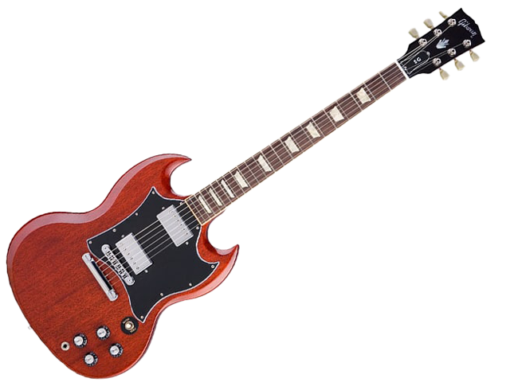
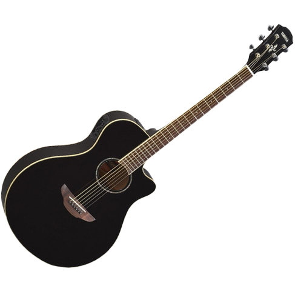

Guitarra eléctrica Persian EGR200 les paul
Esta Les Paul cuenta con pastillas, tono independiente y controles de volumen para cada elemento, lo que produce distintos resultados.
ver

guitarra eléctrica Gibson SG Standard
La Gibson SG viene equipada con dos pastillas Gibson clásicas, la aleación usada es Alnico 4
ver

guitarra acústica fender fa-125
La GUITARRA ACÚSTICA FENDER FA-125 presenta un mástil hecho de Nato
ver